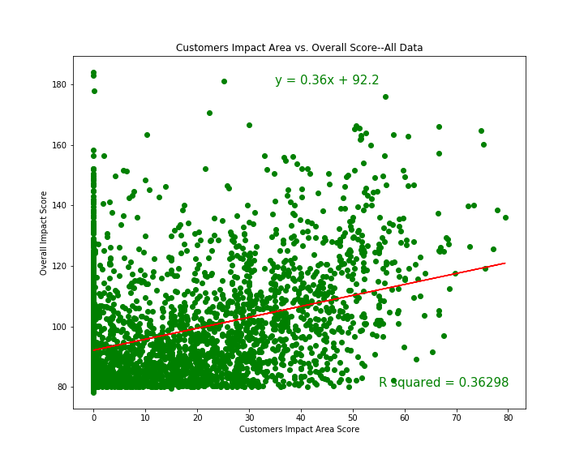

The community impact area
evaluatesthe company's positive impact on the external communities in which the company operates.
The scatter plot below maps the community impact area scores of all US B Corps in our dataset vs
their overall impact scores shows that variation in overall impact scores can be explained about
38% of the time by variation in community impact scores.
Customers
The customers impact area evaluates the company's value to their direct customers and consumers
of their products and services, and asks questions like whether the company specifically benefits
underserved populations, addresses social and/or economic problems, or helps create access to basic
services. The below scatterplot mapping the customers impact area score vs. the overall impact score
shows that variation in overall impact score can be explained by variation in the customers impact score
about 0.8% of the time.

Environment
The environment impact area measures overall environmental stewardship of the company.
This impact area asks questions such as how the company identifies and manages general
environmental impacts, specifically with air and climate issues, water sustainability, and
impacts on land and life. The scatterplot below maps the environment impact score vs the
overall impact score and shows that variation in overall impact scores can be explained about
15% of the time by variation in environment impact sores.